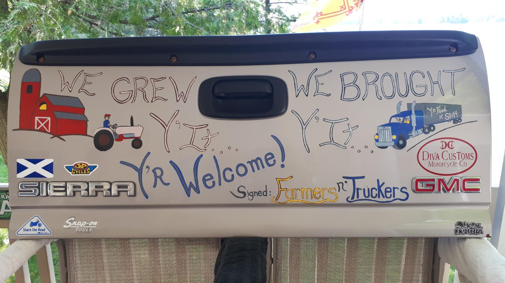
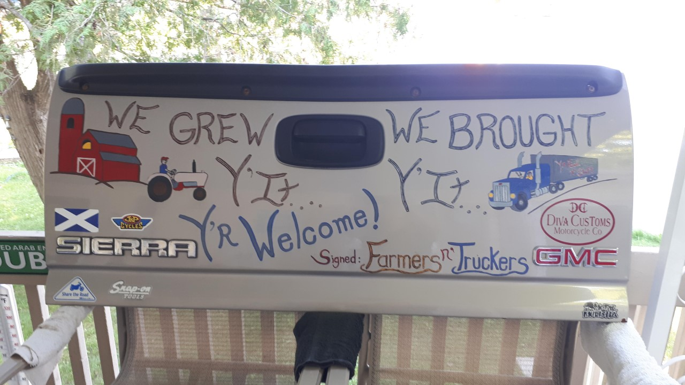
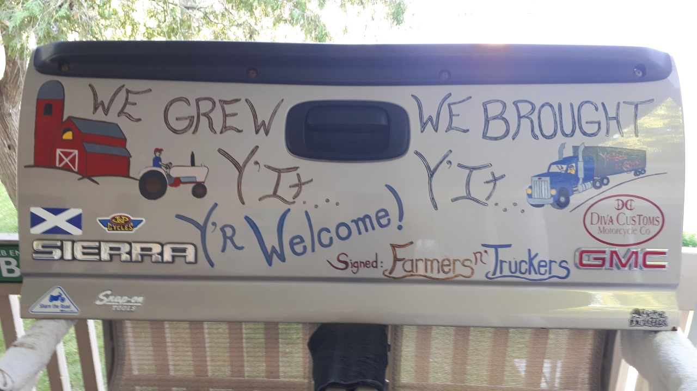
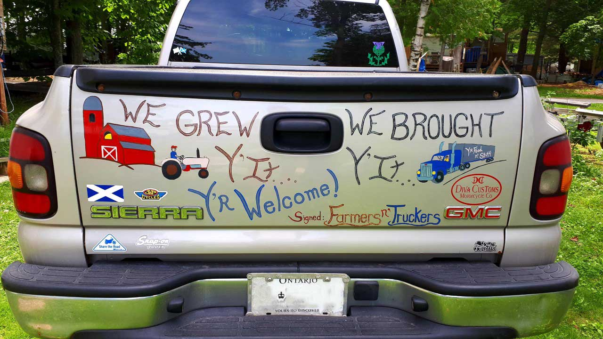
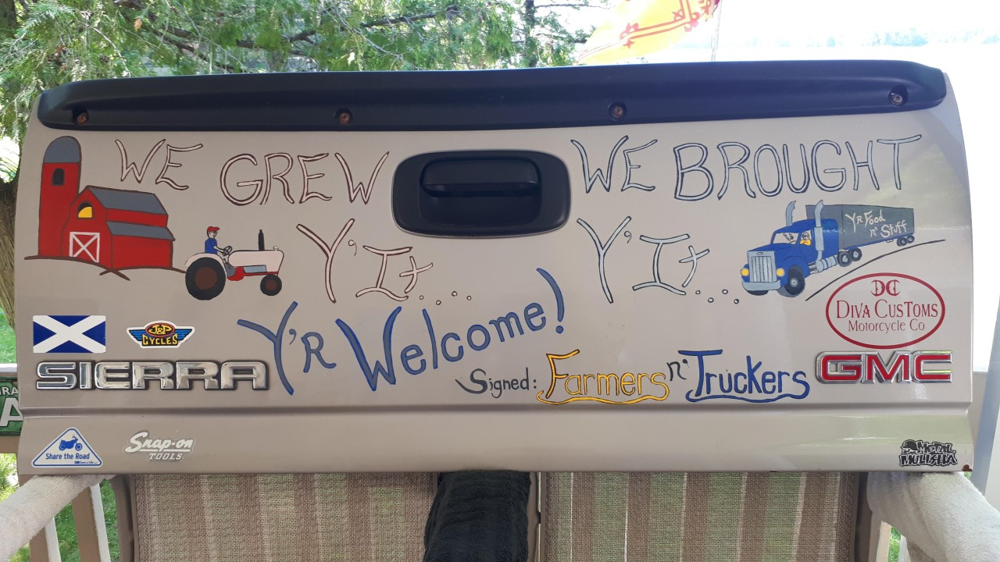
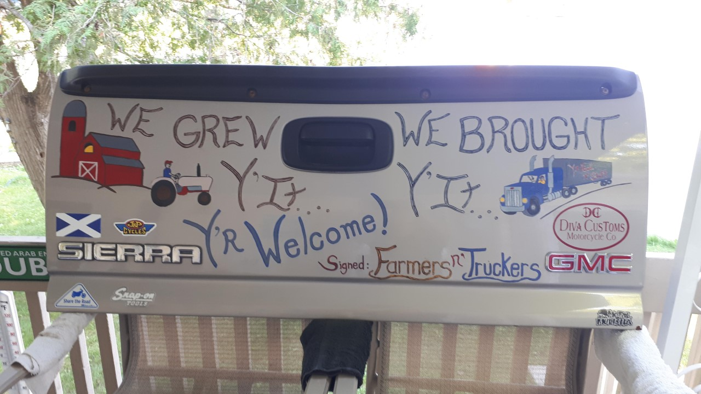
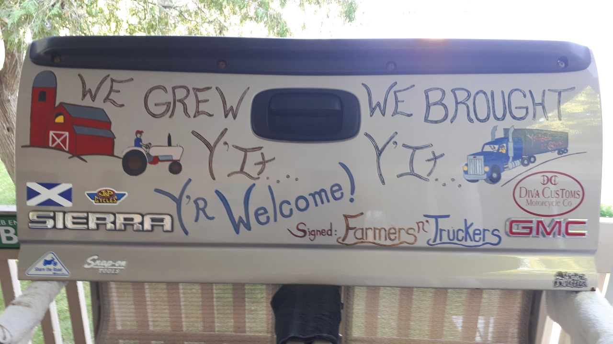
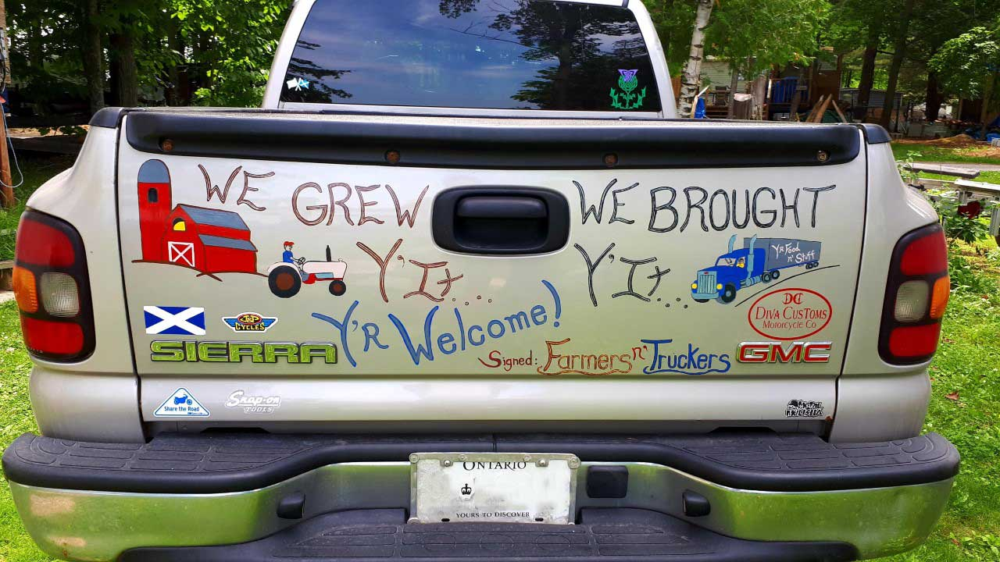

KF Auto Parts
So… one February night while chatting with a fellow motorhead over a coupla wobbly pops…. I threw this wee notion that had been kicking around in Taterland out on the floor for discussion…. K.F seemed to think it was kinda funky too when I later told him of my idea. So – I got busy pickin’ parts fresh from his yard! – Including the canvas! See a bit O’ the magic here below…
(*Special thanks to fellow motorhead “L.C.” for the welding! ~ He knows who he is!)
Originally, I was going to strip this hood… but as I started to remove paint with the sander… this glorious rat roddy thing started to appear… so I stopped (a little-ish) then shot clear over it to preserve the look and hold back the rust a bit… just a wee bit tho… hoping it will funkify over time...
The canvas picked winter fresh from the fields!
Wanting to create a place to play with colour design.. I created this rendering and turned it into a coupla copies, so I could use my artist markers to scheme...
Skull buggery tryin to figure out what parts could create my letters

Yip… this group fit across the hood… it’s a go!
All parts had to be cleaned & sandblasted before being welded together then layin on their canary yellow base.
After standing er up outside shop to take a step back to assess while thinkin yay, me done! I realized not quite... the mottled hood we (ME) all loved so much made it hard to see the letters K.F. from a distance.... dirty ratsafrats!!!
Located on Hwy 29 between Almonte n’ Pakenham peeps!
Rootbeer Hood ~ Cause doin’ it once wasn’t enough. ~ HA!
Upon receiving the first, blue hood, K.F. was pretty taken with what I showed up with months after our first chat. He more or less said he hadn’t been sure back in February how I was gonna manage, but wanted to see what I would come up with!
He was pretty chuffed with what I presented him that day! Several weeks later, while there on a parts hunt for my beloved pick up, he asked if I wouldn’t “mind” doin’ a second one……
*DETAILER”S DELIGHT! – I got to get my detailin’ groove on and gave this hood a solid buff n’ polish to make it POP from the start!

As with hood #1 picked, sorted, selected, degreased, then sandblasted appropriate parts to create the letters… I wanted to do a few things different here, mainly for variety, but some were fun to use again… Ah…..art!
Wanted a retro colour scheme that would still serve with a strong contrast for a road sign… had to go with surf blue n’ a splash of orange inside that yellow to complete the feel….kf

 






